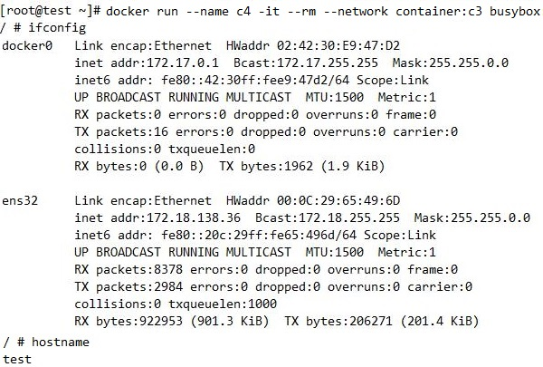
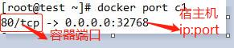

Network

docker安装后，默认会创建三种网络类型，bridge、host和none，可通过如下命令查看

Docker网络
bridge:网络桥接
Docker默认的网络设置，此模式会为每一个容器分配Network Namespace
当Docker server启动时，会在主机上创建一个名为docker0的虚拟网桥
每次docker容器重启时会按照顺序获取对应ip地址，ip都发生变化
这是个SNAT网络，容器只能访问外网，外网主机确无法访问该容器
host：主机网络
和宿主机共用一个Network Namespace。
容器将不会虚拟出自己的网卡，配置自己的IP等，而是使用宿主机的IP和端口。
none
Docker容器拥有自己的Network Namespace，但是，并不为Docker容器进行任何网络配置
这个Docker容器没有网卡、IP、路由等信息。
有需要时，我们自己为Docker容器添加网卡、配置IP等。
共享 ：
Docker 容器会共享其他容器的网络环境
共享桥的原理：
共享Net UTS(主机名) IPC,使用同一个网络地址，主机名和网络协议栈
而mount user PID还是隔离的，文件系统也是隔离的
注意
端口只能绑定在产生网卡的容器上
联盟式网络彼此间端口存在冲突可能，通常只会在多个容器需要loopback接口通信，或对某已存在的容器属性进行监控时才使用
相关命令
docker run 命令中涉及网络的相关命令
--network 启动容器时，指定使用的网络
[bridge|host|none|container:name]
--hostname 启动容器时，指定容器的主机名
--add-host list 启动容器时，指定内部的hosts解析文件
--dns 启动容器时，指定DNS地址
--ip string 启动容器时，指定容器的iPv4地址
-p|--publish
因为Bridge桥是SNAT桥,容器是不能被外网访问的，所以就需要加DNAT规则
例：
启动为none类型的网络
docker run --name c1 -it --rm --network none busybox:latest
启动为bridge类型的网络:docker默认的网络模型
docker run --name c2 -it --rm --network bridge busybox:latest
启动为host宿主机类型的网络
docker run --name c3 -it --rm --network host busybox:latest
此时hostname,Net都是和宿主机是一样的
此时在容器内部启动nginx服务，其他主机是可以通过宿主机提供服务的
启动为共享类型的网络
c4共享的是c1的nono,UTS,IPC,而Mount,PID,User进程，用户，文件系统还是隔离的
docker run --name c4 -it --rm --network container:c3 busybox:latest

docker run --add-host c1:192.168.10.1 busybox:latest
cat /etc/hosts可以看到添加的解析
docker run --dns 114.114.114.114 --dns 8.8.8.8 busybox:latest
cat /etc/resolve可以看到指定的DNS地址
docker network:
ls：显示docker内部的全部网络
connect: 让容器连接到某个网络上
disconnect: 把容器从某个网络断开
create: 创建自定义网络，和KVM创建网络类似
inspect:查看某个网络是怎么定义的
prune:删除所有未被使用的网络，即没有任何容器使用该网络，危险命令
rm: 删除docker内部的网络
自定义网络
docker network create
connect:相当于创建一对网卡，一半在桥上，一半在容器中
而且默认创建的网络都是SNAT桥
选项：
-d|--driver string 创建时，要指定桥的类型
默认是bridge，当然还有 host macvlan null overlay四种类型
--gateway strings 默认是定义的子网的第一个IP地址
--subnet strings 子网地址
--ip-range strings 地址分配的IP地址范围
修改默认的bridge，docker0桥
自定义docker0桥的网络属性信息：/etc/docker/daemon.json文件
{
"bip": "192.168.1.5/24",
"fixed-cidr": "10.20.0.0/16",
"fixed-cidr-v6": "2001:db8::/64",
"mtu": 1500,
"default-gateway": "10.20.1.1",
"default-gateway-v6": "2001:db8:abcd::89",
"dns": ["10.20.1.2","10.20.1.3"]
}
核心选项为bip，即bridge ip之意，用于指定docker0桥自身的IP地址；其它选项可通过此地址计算得出
查看bridge信息
docker inspect bridge
创建一个名叫 mynet 的网络，并设置其网段为192.168.0.0/16的网络
docker network create --subnet=192.168.80.0/16 mynet
启动Docker容器的时候，网络是在启动时依照ip地址顺序分派的，可以手动指定
docker run --name web -it -d --network mynet -p 8080:80 --ip 172.17.0.5 centos bash
端口暴露
docker run -p|--publish
docker提供了一个-p选项来自动生成DNAT防火墙规则
-p选项的用法和使用格式：
<containerPort>
指定的容器端口映射至主机所有地址的一个动态端口
<hostPort>:<containerPort>
容器端口<containerPort>映射至指定的主机端口<hostPort>
<ip>::<containerPort>
将指定的容器端口<containerPort>映射至主机指定<ip>的动态端口
<ip>:<hostPort>:<containerPort>
将指定的容器端口<containerPort>映射至主机指定<ip>的端口<hostPort>
“动态端口”指随机端口，
指定了映射的端口后，可以使用命令查看映射关系：
docker container port [name]
例：
docker run -it --name c1 -p 80 busybox
